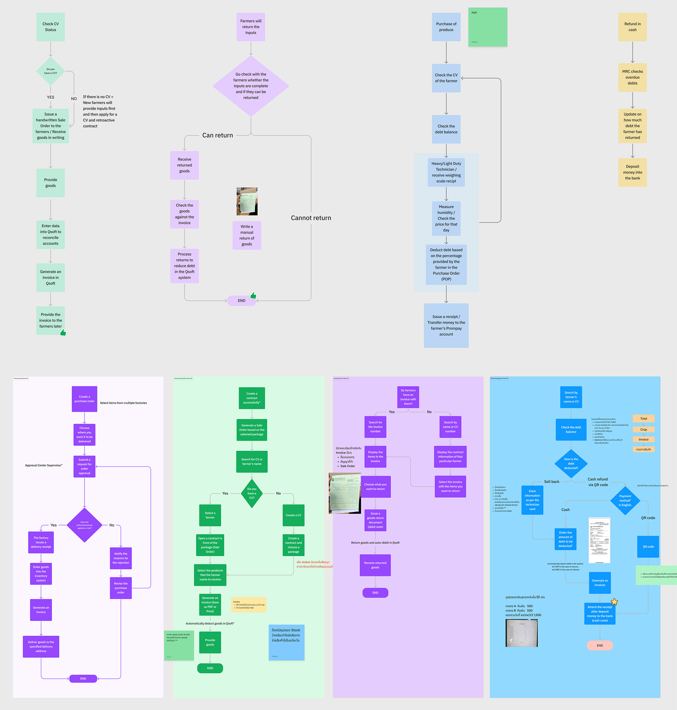

Disclaimer: Some of initial research materials are presented in Thai to align with our target users' language proficiency.However, I'm more than willing to provide further explanations and insights in English during our interviews.
Farm Pro
Project background: Agricultural officers faced numerous challenges in monitoring and managing daily farmer activities. Traditional methods were often cumbersome, time-consuming, and prone to errors. Agritect aimed to revolutionize these processes, making them more efficient and accessible.
Role and Responsibilities: In this role, I played a pivotal part in designing the entire user experience for the app.
- Wireframing
- Prototyping
- Conducting user interviews
- GA tracking
- Create User Jouney
- Create Personas
- Usability testing
- Csat scores
Process overview
Emphathize
Through interviews with ten dedicated officers, we have created a representative persona to encapsulate their collective needs, pain points, and aspirations.


Personas
Critical pain points
- Repetitive data entry can lead to errors
- The process involves issuing invoices, waiting for CV, and using multiple systems, occasionally resulting in errors
- Repetitive manual work consumes most of the time
- Distrust in system data necessitates cross-checking across platforms; decisions are made using Excel
- Challenges arise due to inadequate system training
- Lack of CV submission notifications requires follow-up calls for status checks
Define
In the defining process, we place a strong emphasis on collaboration, working closely with project owners and business partners. Our goal is to ensure that our solutions address the demands and needs of both users and the business side.Therefore,this process is like a comibination of defining problem and ideating the ideas togetehr between team.
Define & Ideate
Prototype
During our initial phase of app launch, we introduced a total of four features, which are registration, contract farming, surveys, and daily activities.

Final
Vertical farming & Co-owning system: This approach maximizes space while supporting a water recycling system. The arrangement of ponds is based on each animal's water freshness needs, with fish at the core, shrimp in the middle, and crab and sea shell on the outer ring. This design promotes water reuse from the core to the outer ponds. On the right, the co-owning system is illustrated, which not only increases income but also reduces water consumption. Working together conserves water compared to individual farming.

Mangrove filtration: We've created a pipe shelter for mangrove filtration using local materials. This shelter serves as storage for farmer tools and a chill-out area for visitors. Its design mimics mangrove structures and can be connected to the pump system to utilize greywater for cooling.
Port and Data learning center: All data from supermarkets where our product is distributed will be sent back to the learning center. This allows farmers to receive performance feedback for continuous self-improvement
Expected impacts: These communities offer local farmers a chance to break free from hierarchical systems designed to benefit the powerful. To grow, they must seek partnerships, which could be with supermarkets or organizations like WWF, known for their mangrove habitat expansion project by 2030. A partnership with WWF could not only expand our Rayong community but also benefit mangrove ecosystems across Thailand. This community showcases the symbiotic relationship between sustainable seafood production, water ecology, and mangrove ecosystems, proving they can coexist harmoniously and support one another.